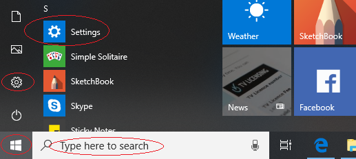
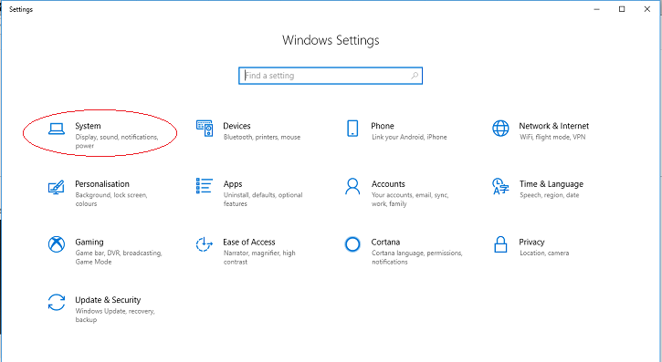
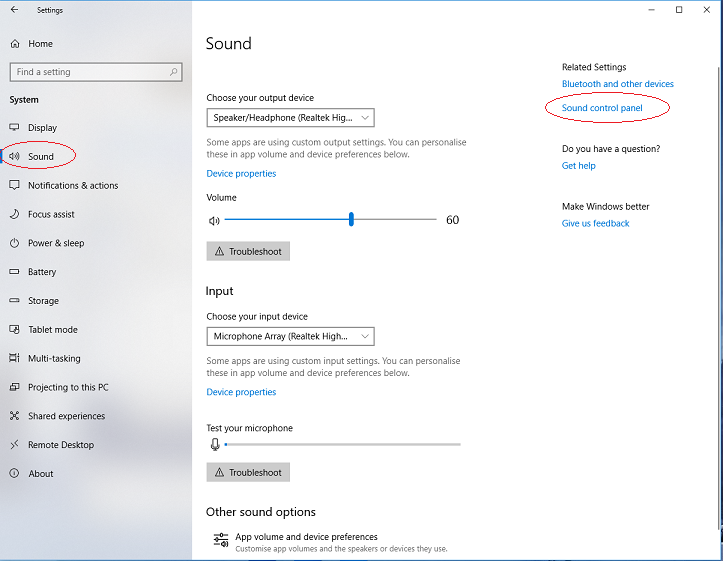
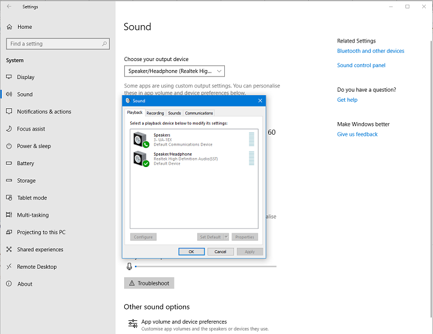
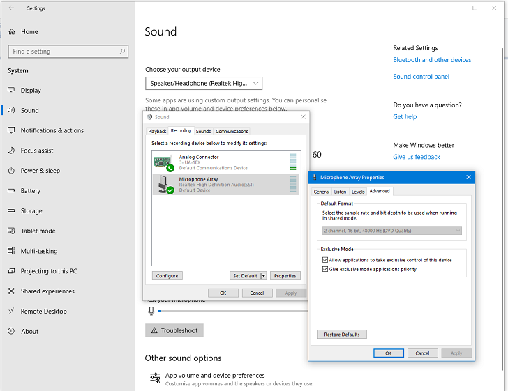
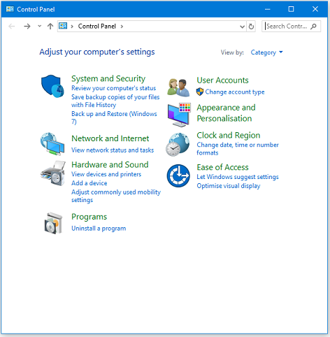
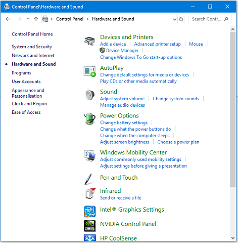
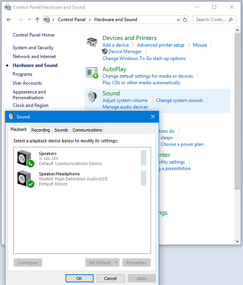
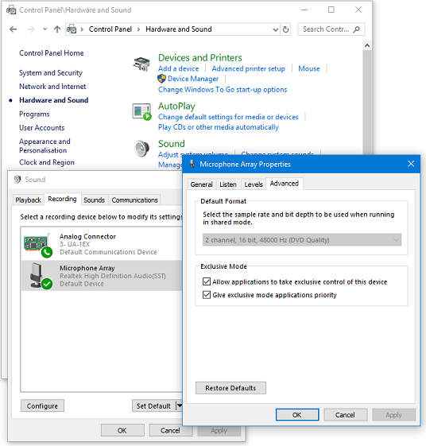

Windows: accessing the Windows Sound controls
There are several ways to access the Windows sound controls - those available to you may depend upon your version of Windows and your PC.
Contents
- 1 Windows 10
- 2 Control Panel for older Windows versions
- 3 Speaker icon in System Tray
- 4 Direct access to the Control Panel Sound settings
- 5 Managing the settings
- 5.1 Recording Settings
- 5.2 Playback Settings
- 5.3 Communications Settings adjustment (even if you don't make Internet calls)
- 5.4 Alternative settings if crackly recording or playback occurs, or if recordings made while playing other tracks are not synchronized
- 5.5 Audacity rescan/restart and settings
Windows 10
Accessing the Settings dialog
Windows 10 has a new Settings dialog which can be accessed in a number of ways
- 
Alternatively, at the bottom left of your Windows screen there is a search box. Where it says "Type here to search" simply type "Settings".
Windows Settings
Then click on the System entry to get the appropriate Settings dialog.
- 
Settings window
Then click on "Sound" in the left column of the Settings window that appears.
- 
- Windows 10 Settings window for sound
Sound settings dialog
Click on Sound control panel on the right and you will get the Sound settings window:
- 
- Sound settings window showing playback devices available - exact contents depend on your available devices
Device settings
To change to the Sound settings for input devices, click on the Recording tab - and then click on the required device.Click then on the required settings tab, in this example Advanced, (which is usually the one required):
- 
- Sound settings showing the Advanced settings for Microphone input
| You can also access the sound controls via the output and input devices shown in the center of this window by clicking on their respective Device properties. The devices to be worked on can be selected from the dropdown menus. |
Control Panel for older Windows versions
Control Panel
The older way (for earlier versions of Windows) of accessing controls was via the Sound Control Panel:
- 
- Windows Control Panel
Hardware and Sound
Click on Hardware and Sound and you will get:
- 
- Windows Control Panel - Hardware and Sound
Sound
Click on Sound and you will get the Sound settings window:
- 
- Sound settings window showing available playback devices
exact contents depend on your available devices
Device settings
To change to the Sound settings for input devices, click on the Recording tab - and then click on the required device.Click then on the required settings tab, in this example Advanced, (which is usually the one required):
- 
- Sound settings showing the Advanced settings for Microphone input
| See below for a method of direct access to the Control Panel Sound settings |
Speaker icon in System Tray
At the bottom right of you Windows screen there is the System tray.
- Windows System Tray - Speaker icon highlighted.
Right-click on the Speaker icon to get a context menu, the exact contents of which may vary.
- If you have a Sounds entry, clicking on that will take you direct to the Sound settings dialog.
- If you have an Open Sound settings entry, clicking on that will take you to the Settings window for Sound.
Direct access to the Control Panel Sound settings
mmsys.cpl is a control panel file (.cpl) provided by Microsoft to manage Multi-Media Properties. .cpl files merely invoke functions that are otherwise available by clicking on sections of the Windows Control Panel.
The beauty of this approach is that it will work on all flavors of Windows systems using the Windows logo button on your keyboard:
- open the run dialog with +
- enter:
- press the button
This will open up directly the Windows Sound settings window at whatever tab was opne the last time you used the Sound settings.
For the technically-minded
On Windows 10 with a slightly longer command string you can control precisely which of the Sound settings tabs is opened:
- open the run dialog with +
- enter:
- press the button
This will open up directly the Windows Sound settings window at the Recording tab
Changing that final numerical parameter will open the different tabs
- 0 Playback
- 1 Recording
- 2 Sounds
- 3 Communications
Managing the settings
It is common on Vista and later that not all recording inputs are automatically enabled in the Recording tab. This means they are invisible in that tab, and also invisible to recording applications like Audacity. So you need to make them visible, then enable and make default the main one you want to use, following the steps below.
| All the settings below are specific to each recording or playback device. Therefore after enabling, making default and adjusting settings for your main recording and playback devices, it is best to enable and adjust settings for each other device you want to use. |
Recording Settings
Choose the Recording tab:
- Right-click anywhere inside the empty, white space, of the Recording tab and choose "Show disabled devices" then right-click again and check "Show Disconnected Devices".
- For a device having a physical input like line-in or microphone, connect the required cable and make sure it fits tightly - a physical device not connected may show as "currently unavailable".
- Right-click specifically over the input device you want to record with (for example, line-in or "Stereo Mix"), and if visible, choose "Enable".
- Right-click once again over the input device you want to record with, and choose "Set as Default Device", this will not show if you only have the one input device.
- Right-click once again over the input device you want to record with, click then the tab and ensure the volume slider is turned up.
- Right-click once again over the required input device, click then click the tab and set the required format (channels and sample rate) using the dropdown menu for Default Format
- Set Default Format to mono or stereo to match with the number of "recording channels" in Audacity's Device Toolbar or the Devices tab of Audacity Preferences.
- Set the sample rate in Default Format so that it's the same as the project rate bottom left of the Audacity screen. 44100 Hz is a safe choice if you are unsure. Now click the button.
Playback Settings
Now choose the Playback tab:
- Right-click over your desired "Speakers" or "Headphones" sound device and if visible, choose "Set as Default Device". If the right-click menu also shows "Set as Default Communication Device", choose that as well, then by default all applications will use that device.
- Right-click over your desired device again, choose then the tab, and set Default Format to a stereo choice with the same sample rate you chose in step 6.2 of the "Recording Settings" above.
- To ensure the soundcard does not add unwanted playback or recording sound effects like "Cathedral" or "Closet", look for , or tabs and turn off all effects that are not required. Click the button to close Windows "Sound".
Communications Settings adjustment (even if you don't make Internet calls)
Windows sound settings are often optimized for VoIP (Internet calls or video conferencing) using applications such as Skype, but these settings can interfere with high quality microphone recordings of music.
- Look for and turn off all sound enhancements and any other sound effects unless you need them. To do this, right-click over "Microphone", choose then look for an or tab where you can disable all effects.
- On Windows 10, Windows 8 or Windows 7, also click the Communications tab, then under "When Windows detects communications activity:", choose "Do nothing". This should prevent unwanted playback volume changes when recording computer playback or when recording over playback of another track.
- If you do make Internet calls and require to use specific devices for calls, proceed as follows.
- To use a particular microphone only for calls, right-click over that device and choose "Set as Default Communication Device" (a green "telephone" icon will appear by the device).
- Similarly, to use for example headphones as playback device for calls and speakers or other devices for music, choose the Playback tab at the top of "Sound", right-click over the device to use for calls and choose "Set as Default Communication Device".
- If you want to use a headset for calls, choose "Set as Default Communication Device" for the headset on both the Recording and Playback tabs.
Alternative settings if crackly recording or playback occurs, or if recordings made while playing other tracks are not synchronized
- Open Windows "Sound", choose the Recording tab then right-click over your chosen recording device and choose "Properties". Click the "Advanced" tab, then put a checkmark (tick) in both Exclusive Mode boxes.
- Choose the Playback tab then right-click over your chosen playback device, choose "Properties," click the "Advanced" tab and similarly enable both Exclusive Mode boxes.
- Restart Audacity or use then choose Windows DirectSound host in Device Toolbar or Devices Preferences.
- In Exclusive Mode, the sample rate selected in "Default Format" no longer applies, so be sure at bottom left of Audacity to choose a project rate that your device supports.}}
Audacity rescan/restart and settings
To make Audacity aware of all the changes in Sound, use or restart Audacity.